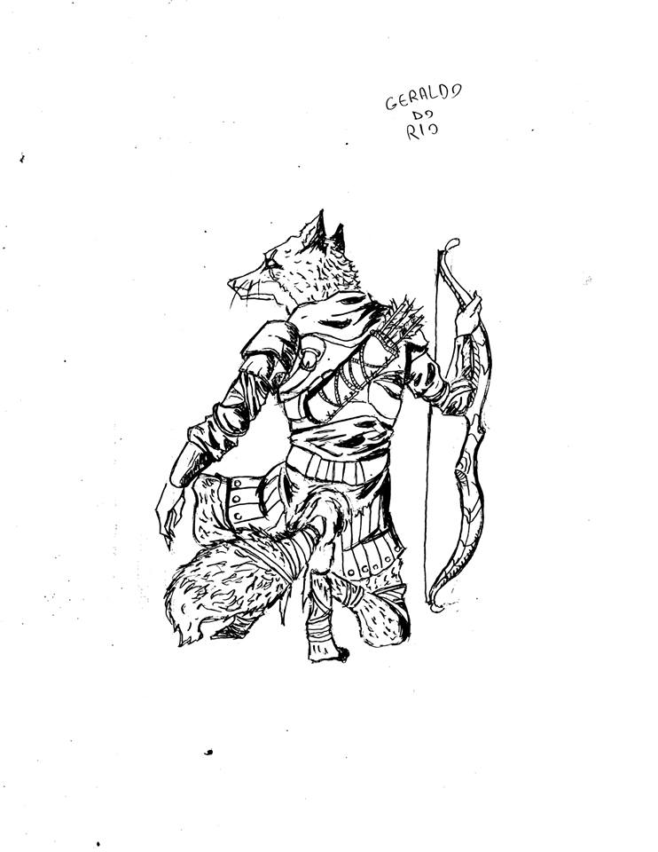
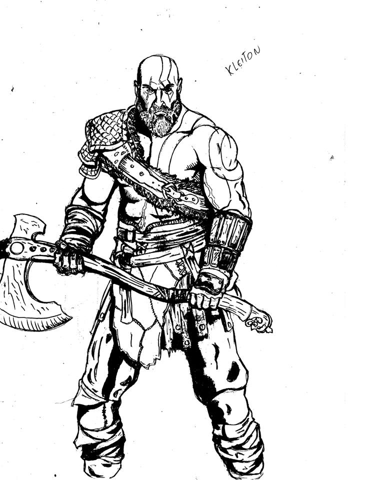
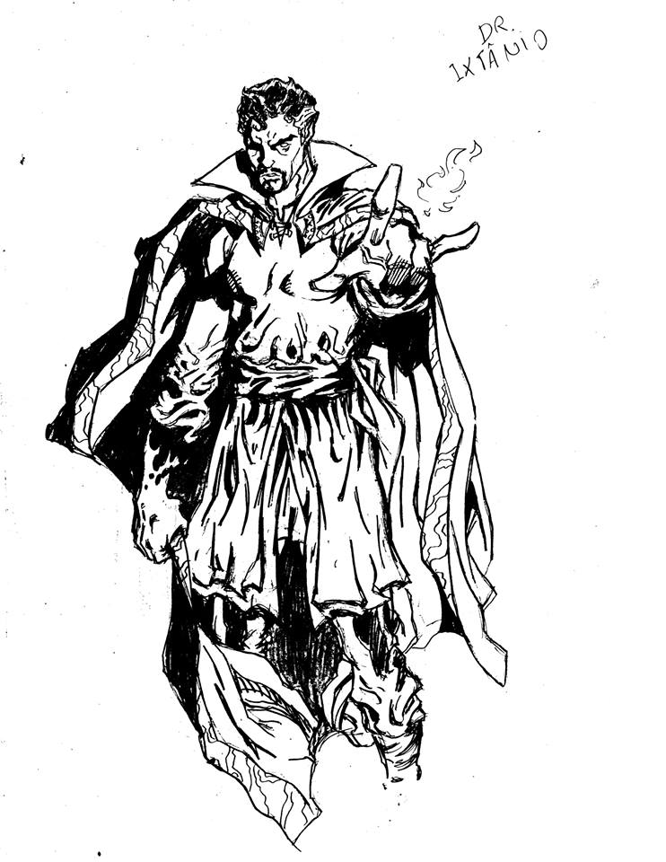
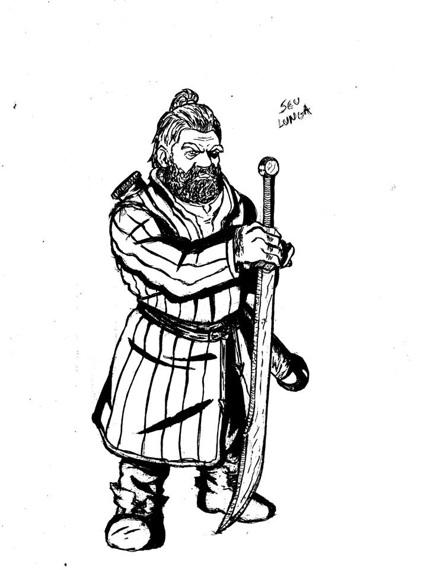

Depois de derrotarem o terrivel urso quimera, os aventureiros depois de festejarem por dias finalmente partiram do vilareijo em busca de novos desafios, deixando para tras seu companheiro Kleiton bom de guerra.
- Doutor Ixtanio: Vindo de uma misteriosa ilha onde aprendeu as artes misticas, o Senhor Doutor Porfessor Ixtanio como é conhecido, agora se reune mais uma vez com seus companheiros para mais uma jornada.
Alefe Cosendey. - Geraldo do Rio: Geraldo é apenas um tailox comum, depois de conhecer o preconceito dos humanos com sua raça, Geraldo decidiu passar o resto de seus dias provando ser tão nobre e importante quanto qualquer humano.
Don Lira. - Josel o Anão: Nas montanhas distantes onde vivem os anões, Josel nunca teve o devido respeito por viver no subsolo, após sua familia ser assassinada ele descide partir em busca de vingança.
Joseph Gomes. - Throw: Sufocado pela fome que assolava sua familia (mãe, pai e irmão mais novo), Bisthrotax Smert, também conhecido como Throw decidius ir atras de trabalhos com caça e pequenos furtos até ser pego pelo governo local. Pela vergonha, decide fugir e atras de mais riqueza para um dia retornar à casa com capacidade de tirar da fome todos de seu pais.
Fafo Junior.



